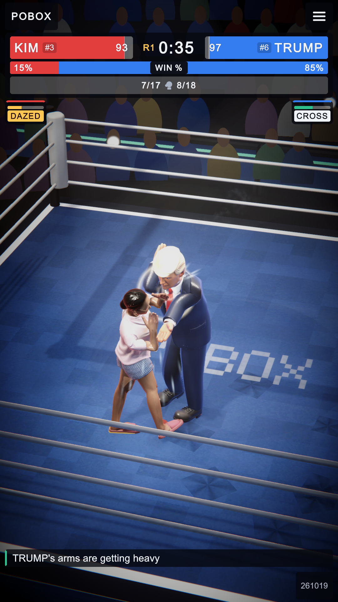
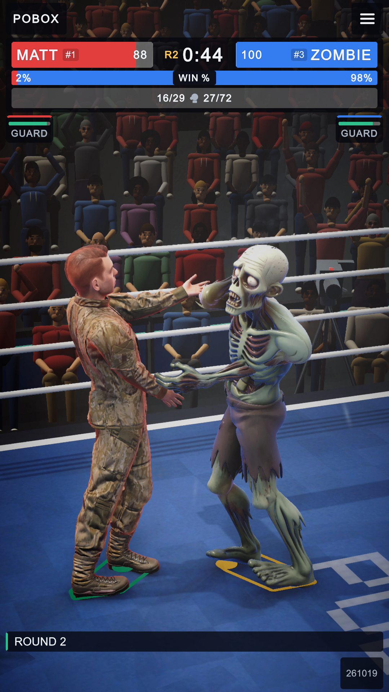
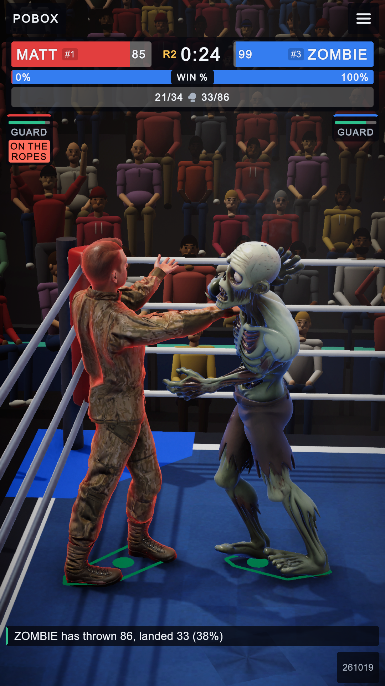
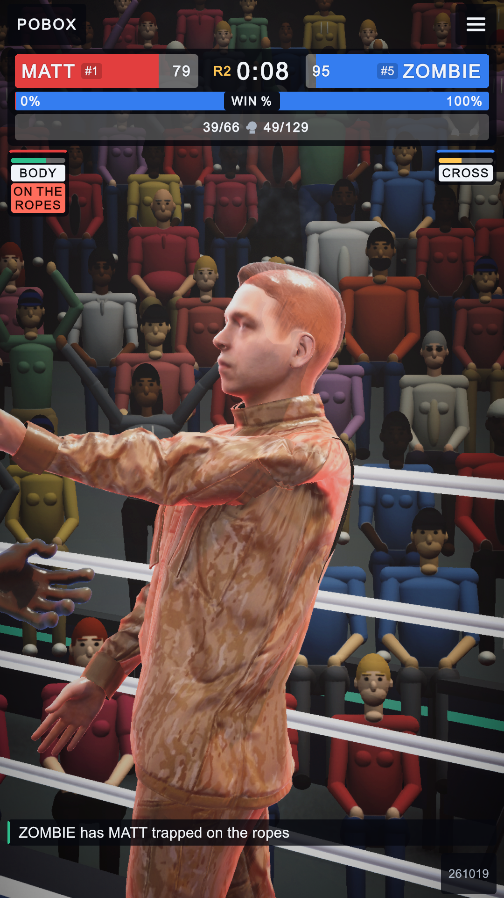
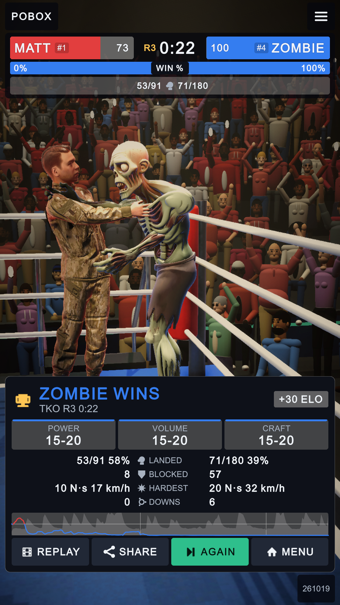
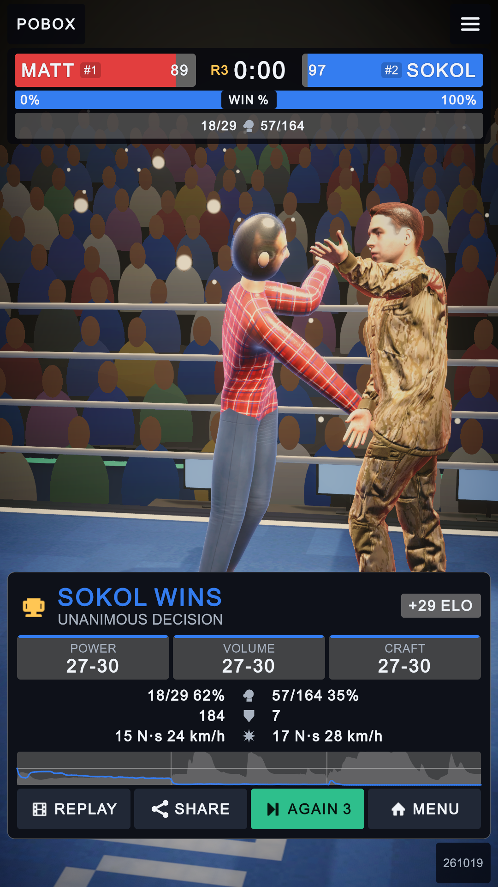

Graphics and sound pass, 2026-10-31
Before: the play-through audit this morning (SCREENSHOTS/2026-10-31-browse). After: the editor at 1080 x 1920 on the new High tier (the desktop default), Matt v Zombie, captured with the dev script. Yellow boxes mark what changed. No physics, collision or trained brain was touched.
1. In the fight: the crowd, the ring lights, the ropes
The stands were flat coloured head-and-shoulder blobs; now they are 16 different people rendered in Blender (seated, standing with arms up, holding up phones), lit by the hall with their own normal maps, still one draw call. The four ring spots now cast soft shadows (each boxer stands in a pool of light with a shadow under him), the six house lamps no longer do (their 36 shadow faces were blurry and cost the most), and a reflection probe over the ring replaces the sky in reflections. The ropes have 12 sides instead of 6 and a vinyl sheen. On High, a volumetric haze is lit by the spots; tuned down to a quarter resolution to hold 30 fps it is subtle.



The crowd's own before/after at a wide and a close shot: 2026-10-31-crowd-impostor. After the first look, the atlas was re-rendered without bust spheres and with a flat shirt strip under open jackets (both read as circles and holes).
2. Skin on High, and the mistake it fixed
The High tier lights skin as skin: light bleeding red past the edge of a shadow, ears glowing when lit from behind, the faint oily second highlight. The first version lit the whole mesh, and these boxers wear their clothes as part of one mesh, so Matt's camouflage glowed orange. It now applies to the face, ears and neck only, softer.


3. Result card: waits for the player, labelled rows, knockdowns
From the audit: the card started the next bout by itself after 18 s (AGAIN 18 counting down); the rows were icons with no words; there was no knockdown count. Now it waits for MENU or AGAIN, the rows say LANDED, BLOCKED, HARDEST, DOWNS, and a round with nothing to score is 10-10 (the audit saw a zero-punch fight won 30-28).

4. Sound (no picture: heard, not seen)
| What | Before | Now |
|---|---|---|
| Punches | Generic game clips, pitched by speed | Built from the impact (Audio/ImpactSynth.cs): a leather slap as long as the glove's contact, over the ring of a skull or the thud of a chest; harder is lower and longer. The clips stay as a quieter top layer. |
| Blocks | Clips | Padding on padding: a dull pop with a leather tick. |
| Bell | An athletics lap bell | A struck brass boxing bell: one ding to start a round, three to end it. |
| Falls and steps | A sand-pit thud, carpet footsteps | A sprung ring floor: a low boom with the boards rattling; canvas under boots. |
| Crowd reactions | Louder or quieter | An "ooh" when a big punch misses; boos in a long clinch or when nothing lands. |
| The hall | One fixed Auditorium reverb | A 2.3 s arena that is drier on close-ups and wetter on wide shots. |
| Voices | 32 at once (34 sources: some cut off) | 64. |
5. Frame rate: the High tier tuned to 30 fps
Measured in the editor on the RTX 2060 in a live fight (dev script perf), governor off, render scale pinned.
| High tier with | fps | GPU ms |
|---|---|---|
| Everything, haze full resolution, 64 steps, soft shadow taps | 2 | ~430 |
| Everything, haze half resolution, 32 steps, soft taps | 9-10 | ~100 |
| No haze, full resolution | 30-36 | 28-33 |
| Haze a quarter resolution, 24 steps, hard taps, full resolution | 21-25 | 40-48 |
| Shipped: 85% + STP upscaling, haze a quarter resolution, 16 steps, hard taps | 32-38 | 26-31 |
| PC tier (unchanged, for comparison) | 42-45 | 22-24 |
The phone tier (Mobile) cannot be shown in the editor (it is excluded from desktop); it got the crowd textures at 2048 and nothing else that costs. Checks: OneScreen layout audit 73/74 (the one left, a momentum label 2 px too small at 1080 x 2340, failed before today), no errors in play.
Not done
- Trunks and boots: modelled in Blender for all eight (BLENDER/2026-10-31_boxing-kit) but not used: the boxers' meshes wear their clothes, and trunks over camouflage trousers looked worse.
- Collisions were reviewed, not changed: the ropes are rigid walls and gloves as hard as heads; making them springy and padded changes the physics every brain learned, so it belongs to the next body version and its retraining.